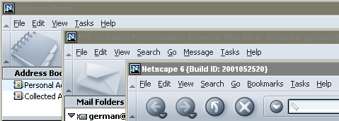

| Mojo |
UI Specification
|
| Main Menus Framework |
Last
Modification:
|
| Author
German W. Bauer
Initial Creation Date: 09 march 1999 |
Status: Implemetable Framework Specification |
Links:
|
Feature Team
|
Summary/Overview
This document describe the cross-platform (and where possible cross-application) main menu structure, as well as hiliting the policy for dynamically extending the menus with net-based functionality and features(even after Mojo has been launched).Goals
Keep the menu structure consistent across apps, platforms - even after functionality may get dynamically added after the launch of Mojo. Keeping a basic menu structure intact and making sure it does not break when new apps/services get added later increases learnability and discoverability for end users.Target Audience
The target user for this feature are Mojo users as described in the Mojo PRD
User Tasks
Fundamental Tasks Intermediate Tasks Advanced Tasks Common to all data view panes
- Access Mojo functionality with mouse'
- 'Cue card' for available Mojo functionality
Mouseless access to most Mojo functionality via mnemonics (Win, Linux) Use Keyboard accelerators as shortcut to most commonly used functionality
Configuring menus and possibly accelerators(not in Mojo)
Design Cheat sheet
Principles of consistency across Mojo apps

Overall Menu Layout/Contents across Mojo apps
File | dealing with documents and the overall environment
New, opening, closing and saving documents
Import/Export if needed
Global primary app-specifc functions (e.g. Empty Trash)
Printing
Exiting Mojo Environment
Edit | editing content and prefs
Undo/Redo
Clipboard operations and special forms of data fill in
Selections
App-specific editing functions
Preferences
View | things that affect the presentation of content and chrome
Toggling Toolbars
App-specific viewing functions
Applying custom style sheets to content
Applying themes and content packs to chrome
Document Info/Properties and Source
International Viewing Functionality
Search | (optional for smaller apps) searching items in documents, user data and on the web
Finding( optionally replacing) in Document
Finding in user data
Finding on the web
App Specific Menus | (optional)
as needed (should be no more than 2 extra menus)
Tasks | switching between apps and accessing tool type functionality
Switch to other core application (as installed)
Switch to Tools
Switch between open windows
Help | user assistance
Receive user assistance (either built in or pointing to resources on web)
For detailed specification see help menu spec by Netscape Info Design Team
Design Details
Note: for definite word on keyboard accelerators and mnemonics see http://www.mozilla.org/projects/ui/accessibility/
Menu Details
File Menu
| Structure | Extensibility | |||
|
New/Open...(submenu)
will show the default new item first, before a submenu giving a access to other core new items. These items are to be presented consistently across apps like this: Closing/Save...
Export/Import...
Offline...(submenu)
Printing...
Quitting
|
Location:
Top portion of New sub-menu Kinds of items to be put there:
Location:
Kinds of items to be put there:
|
Edit Menu
| Structure | Extensibility | |
|
Undo/Redo Transactions
Generally will show the default new item first, before a submenu giving a access to other core new items Clipboard Transfer...
Selection...
Preferences...
|
Location:
Items can be added to the Selection section as well as below the selection and above the prefs selection Kinds of items to be put there:
|
View Menu
| Structure | Extensibility | |
|
Toolbars > (submenu)...
This sections lets users toggle the visibility of the toolbars Sidebar
Text Size... (optional) Page...
Translate > (submenu)
Character Set...
|
Location:
Between toolbars and Page info items Kinds of items to be put there:
|
Search Menu
| Structure | Extensibility | |
|
Find...
This invokes the find dialog directly related to finding on the currently viewed page
Smart Search...(placeholder term) Note:
not in for Mojo |
Location:
In the second section below Find... and the Smart Search... section Kinds of items to be put there: App Specific area This will be dependent on the app, for example Messenger will be basing its search on the currently active folder, may offer to search one or more levels above in the hierarchy of folders Other Search services A set of globally accessible and dynamically updateable search services as determined by PM and Netcenter |
App Specific Menu Extensions
| Structure | Extensibility | |
|
|
Location:
App-specific top level menus have to be inserted after the "Go" menu, but before the "Tasks" and "Help" menu Kinds of menus to put there:
|
Tasks Menu
| Structure | Extensibility | |
|
Core Applications...
This could include the 4 or 6 applications we name core level, and this section will not be changed for consistency reasons. If an application component is not installed, we can show the user how to install the application. Alternatively, third party app integration can be used here (e.g. Eudora can be substituted for Messenger if the user desires)
Privacy and Security... Tools (submenu) ()...
Go To Window >
|
Help Menu
Note: For definite specification on help menu see help menu specs from the Info Design/Documentation Group| Structure | Extensibility | |
|
Contents >...
Index, possibly aggregated from both Netcenter and local sources through RDF How-to >...
Help Channel...
Other Misc. Items... About...
|
We should be really careful to keep the help menu as short
as possible, in order to not decrease its effectiveness as evidenced in
4.5.(see help
menu proposal for reasoning here)
|